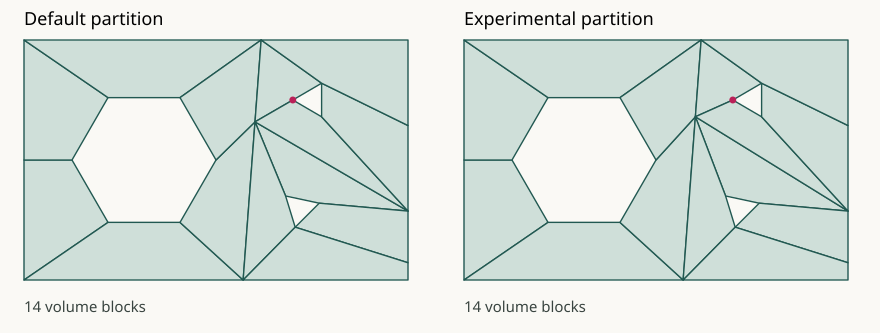

Construction from native sketches
SolidCraftTrivariate constructs rational tensor-product volume maps from supported, explicit sketch families. A sketch is design input; a partition is an inspectable construction result. These are separate objects: changing the partition need not change the represented boundary, while changing a profile may invalidate both the partition and its certificates.
The implementation is a collection of qualified families, not a universal sketch-to-solid algorithm. Each family has its own schema, geometric preconditions, finite search budget, audit, and regression fixtures. The planner rejects a recipe when no candidate meets its contract; a valid CAD shape is not necessarily representable by the available family.
Sketch arrangements and separators
The polygonal input family is sketch_layer_partition_v1. It accepts an
outer straight-edged contour, cut contours, their axial material/void
intervals, and optional construction guides. The coordinates are integer
millimeters. A loop has 3–64 distinct vertices; the recipe allows at most 12
cuts, 64 guides, integer height 1–4096 mm, and coordinates bounded by
4096 mm. Winding is normalized. Self-intersections, repeated vertices,
contour contacts, cuts outside stock, and unhistoried nested or overlapping
cuts are rejected. With explicit Boolean history nested loops are allowed,
but touching or crossing loops remain outside this contract. This family
represents line segments exactly; arcs and NURBS require other schemas.

Moving a separator endpoint changes the angle at a triangular hole. On this sketch the maximum sampled planar condition number drops from 559.00 to 45.48. Both layouts use fourteen blocks.
For polygon inputs, candidate arrangements include rectangular strips, radial constructions, quadrilateral separators, and convex hosts. The automatic planner builds and audits each supported candidate and selects by block count, then by a sampled condition-number diagnostic with stable tie-breaking. Exact area coverage, face incidences, and positive Jacobian bounds are acceptance conditions; the sampled score is not a certificate. The convex-host path handles multiple disjoint convex cuts with shared separator points and floor cells for blind cuts. Candidate search is bounded and a refusal does not imply that the sketch is geometrically invalid.
The NURBS path first extracts active Bézier spans and builds a planar
arrangement of supported intersections. plan-sketch reports the events
that the constructor will use; it does not promise that an arbitrary pair of
curves has an exact finite representation as a regular NURBS intersection.
For supported transverse profiles, event parameters, orientation, source
span, and provenance are retained through subdivision. Tangencies, stationary
parameterizations, unsupported loop relationships, arithmetic overflow, or
an unresolved event cause refusal rather than a guessed arrangement. See
tests/counterexamples/nurbs_multiloop_stationary.json and
tests/counterexamples/g2_cross_ordinary_levels.recipe.json.
An arrangement is not just a set of drawn separators. The graph records vertices, oriented edges, source support, parameter interval, and role as boundary or interior separator. Shared intersections become common vertices. The resulting cells must admit the selected volume maps and conforming interfaces. The general problem of exact cubic curve arrangements has a substantial literature. Eigenwillig, Kettner, Schömer, and Wolpert give a complete, exact, and efficient algorithm for arrangements of planar algebraic curves of degree at most three, including degeneracies such as tangencies and singularities. That result is background, not the algorithm claimed for every SolidCraft family: Exact, efficient, and complete arrangement computation for cubic curves, Computational Geometry 35(1–2) (2006), 36–73, DOI 10.1016/j.comgeo.2005.10.003.
Implemented arrangement and planning modules include
src/sketch_arrangement.rs, src/sketch_quad_separators.rs,
src/sketch_radial.rs, src/sketch_convex_hosts.rs,
src/sketch_nurbs.rs, src/sketch_intersections.rs,
src/sketch_rational_event.rs, and src/sketch_partition_plan.rs.
The higher-level polygon contract and reproduction commands are documented in
the repository README.
Multiple holes and partition choice
For several disjoint polygonal holes, the convex-host planner separates holes into hosts, adds rational split points to host boundaries when needed, and uses the same separator points on both incident hosts. Blind cuts add floor cells that reuse the wall vertices. The method is described with its corpus and limitations in the convex-host report. In particular, arbitrary non-convex stock, arbitrary nesting, intersecting contours, and every possible vertex-count combination are not promised. Other families cover selected multiple circular bores and crossed NURBS tools; they have distinct recipes and topology contracts.
Useful reproducible inputs include:
tests/references/polygon_prism_corpus.jsonfor polygonal benchmark cases;tests/references/sketch_boolean_blind_pocket.recipe.jsonfor a guided blind pocket;tests/references/nurbs_multiloop.recipe.jsonfor supported NURBS loops;tests/references/nurbs_cross_oval.recipe.jsonandtests/references/g2_cross_plate.recipe.jsonfor cross-axis examples;tests/counterexamples/andtests/regressions/for explicit refusals and reproduced defects.
Fixture inventory evolves with the repository. The family identifier inside each JSON file is authoritative; filenames alone do not define a schema.
Extrusion, layers, and cross-axis construction
For an extrusion of a planar map S(u,v) along direction d, the
Jacobian determinant is (S_u x S_v) . d. The extrusion constructor can
therefore certify regularity from the planar determinant when the profile is
simple and the direction is transverse. Axial layer construction partitions
the sweep at feature start/end levels, pocket floors, shoulders, and supported
crossing events. A common subdivision on both sides of each level preserves
whole-face interfaces. Void intervals do not become inactive material blocks.
The nurbs_sketch_strip_v1 family extrudes the region between two
monotone rational NURBS boundaries. Degree is 1–3, weights are positive,
knots are clamped integers under a common rational scale, and both profiles
must admit a common span partition and compatible parameterization. The
constructor proves strict longitudinal monotonicity and a positive gap over
each closed span using Bernstein bounds. It preserves the source parameter
interval for each output block. See the
NURBS strip reference and
tests/references/nurbs_strip.recipe.json.
orthogonal_sketch_features_v1 builds supported orthogonal feature stacks
and propagates compatible traces through multiple layers. Cross-axis bores
and NURBS profiles use specialized constructors: a transverse operation can
change section topology, so a single extrusion template cannot simply be
continued through the event. Intersections must be explicitly planned and
represented by shared edges/faces. For rational surfaces the intersection
curve need not itself be rational; the constructor supports only qualified
cases and refuses unresolved intersections. The crossed-profile example,
its exact-event recipe, and limitations are in the
crossed-NURBS reference.
Important implementation entry points are the NURBS extrusion module, curved-sketch builder, curved-sketch audit, orthogonal sketch builder, crossed NURBS constructor, and multi-loop NURBS constructor. The API is exposed through the Rust crate where the module is public; JSON adapters are separate from the geometry kernel.
Topology, interfaces, and conformity
Every accepted block is a map over the closed unit cube. Its six parametric sides are related to topological faces, edges, and vertices by explicit incidences and orientations. A topological face is either a complete shared interface or a boundary piece. The audit checks that active sides are covered without gaps or overlapping interiors, and that shared faces have compatible traces under their recorded orientation. Design-face identity and block IDs are semantic metadata; they are not inferred from a global numbering after an edit.
Some constructions require subdivision propagation: a cut introduced on a parent face must be carried across exactly matched faces until the whole complex conforms. mapped seam discovery discovers supported exact traces; mapped cut propagation propagates their rational subdivisions. A bounded propagation budget can yield refusal/indeterminate status. Edge-only or vertex-only contact does not establish a volume interface. Euler counts and sampled classifications are useful consistency checks, but neither proves local manifoldness, injectivity, or complete coverage by itself.
This distinction is also visible in a precise topological existence theorem.
For a connected domain whose boundary is a connected surface with topological
quadrilateral mesh Q, Erickson proves that Q extends to a topological
hexahedral mesh of the interior if and only if Q has an even number of
quadrilaterals and no odd cycle in Q bounds a surface inside the domain.
The paper also states that the results extend to domains with disconnected
boundaries. This concerns existence of a topological mesh; it is not a
geometric parameterization or a rational-map certificate.
SolidCraft’s family certificates remain specific to their represented blocks.
See Erickson, Efficiently Hex-Meshing Things with Topology, Discrete &
Computational Geometry 52(3) (2014), 427–449,
DOI 10.1007/s00454-014-9624-3
(author’s paper page).
From design features to volume maps
Chen, Bu, Jin, Xu, and Li describe a segmentation–mapping–merging pipeline whose input is a semantic design-feature network, supplied interactively or extracted from an existing model. They derive geometric feature networks, segment these into complete feature networks, map each complete network to a volume patch, then merge and adjust the patches for IGA. The comparison with SolidCraft is at the workflow level: selected SolidCraft families arrange explicit sketch features, construct rational control nets, and assemble patches subject to their own coefficient checks. SolidCraft does not claim to implement Chen et al.’s semantic feature extraction, network segmentation, or patch-optimization method. The cited paper demonstrates its method on complex mechanical and free-form models; it does not establish the correctness of a SolidCraft construction. Each admitted family also specifies which input configurations it can certify and what a refused edit does to its prior state. Compare the geometric representations and admission conditions when translating an example between these approaches. L. Chen, N. Bu, Y. Jin, G. Xu, and B. Li, “Construction of IGA-suitable Volume Parametric Models by the Segmentation–Mapping–Merging Mechanism of Design Features,” Computer-Aided Design 146 (2022), article 103228, DOI 10.1016/j.cad.2022.103228.
Reproducing a build
From the repository root, use a source recipe, then audit the serialized model before exporting:
cargo run --locked --offline -- build tests/references/nurbs_strip.recipe.json build/strip.model.json
cargo run --locked --offline -- audit build/strip.model.json
cargo run --locked --offline -- plan-patches build/strip.model.json build/strip.patches.json
cargo run --locked --offline -- export-step build/strip.model.json build/strip.step
cargo run --locked --offline -- export-analysis build/strip.model.json 16 build/strip.analysis.json
The CLI routes through the same constructor and audit as the library. A successful build means the family-specific checks passed; it does not imply that a downstream STEP reader, a distinct B-Rep kernel, or an analysis solver has independently validated the export. Use the independent replay scripts and reports linked from the family pages for those claims.